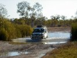
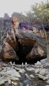
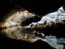
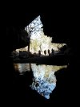
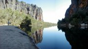

|
You have to be up early if somebody is going to pick you up at 6:45, and we were up early. Breakfast was taken on the little terrace along the rooms with a beautiful view on the sun rising over the Fitzroy River.
A few minutes to seven a Landcruiser drove up in front of the reception, and Gary, the driver and tour guide sent us the day's first smile. Allan and Ellen, a couple from 
Victoria, were in the car, so all together our party counted 6 people (which is almost maximum for the tour anyway). The first 40 odd kilometers were paved road, then we turned right and corrugations, dust, and waterholes was what the wheels were riding on for the remaining of the day.

The first stopover was at Tunnel Creek; the name says it: A creek running in a tunnel. Before entering it, we had some coffee and cake, and we were equipped with a torch. Then right into the tunnel and just a few steps later everything was dark, only the torches were enlightening the trail we went along. Some times we were walking over flat sandbanks in the creek, at other times we were wading through the water, which reached the middle of the thigh at Klaus and me. Once in a while it is good to be tall - Linda was a bit deeper in the water ;-)
According to the Dreaming (Aboriginal name for the Creation) the creek was created by the 
big serpent snake, who went through the rock. Once in there she lost the orientation and had to put her head out of the tunnel, even out of the rock, in order to see where she was. We stopped at the spot, saw the light, continued then through the dark of the remaining part o
f the tunnel.
Aboriginal rock paintings at the other end of the tunnel, the age unknown. Some nearby have been dated to be 37.000 years old.
Back through the tunnel, even into a very narrow side tunnel. Back to the car, and on to the next station: an old historical police-station which played a crucial role in the life of Jandamarra, an Aboriginal rebel who fought the white invaders for three years until he was killed nearby.
Then further on to Windjana Gorge, where we had lunch. Then the gorge was entered. High cliffs, reflecting numerous nuances of red, on either side of the creek. Crocodiles, 
fortunately freshies, were regulating their body temperature in the sun, and definitely not scared of us. They put on a special show and had a fight - exciting stuff.
After walking around in the gorge for a while (Gary took a nap on the banks of the river) we returned to the Landcruiser and set the course direction Fitzroy Crossing. Here we arrived around 6 pm, having a great day behind us.
Fitzroy Crossing Tours, a business Gary has been setting up for three years now and one that he is going to hand over completely to an Aboriginal friend next year, can be highly recommended. If you ever get to this corner of Australia make sure to take their very personalised tour. At $85 it is very good value for money.


|
|
|
{kind=link}
{kind=link}
{kind=link}
{kind=link}
{kind=link}